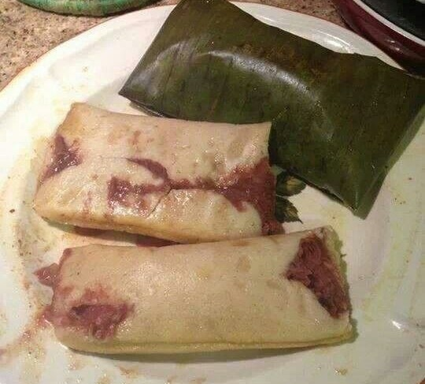

Tamales pisques
ingredientes:2 Libras de maíz
3 Tazas de frijoles molidos y fritos
1/2 Libra de manteca
Sasonador de pollo y sal al gusto
Hojas de huerta para cubrirlos
preparación:
Lo primero es cocer el maíz un día antes y molerlo en molino de nixtamal para obtener la masa
A la masa de maíz le agregamos un poco de agua, de manera que no quede ni muy dura ni muy aguada
también se le agrega sal al gusto, el sazonador de pollo y la manteca
luego tostamos las hojas de huerta
corta un pedazo de hoja de unos 25 centímetros
agregue dos cucharadas soperas de masa y en el centro se agrega una cucharada de frijoles
luego debe envolver estos ingredientes en la hoja
hay que hacerlo de manera que no se salga la masa y que quede bien firme
luego van al fuego 45 minutos o 1 hora hasta que la masa se cosa
retiramos del fuego y emplatamos